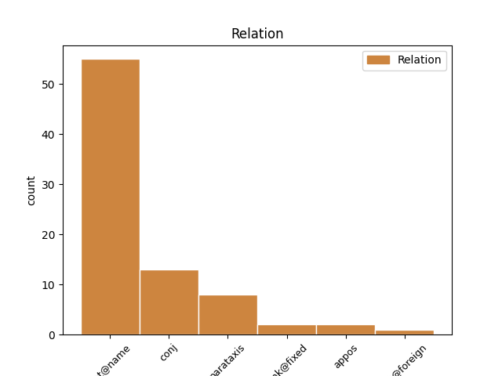
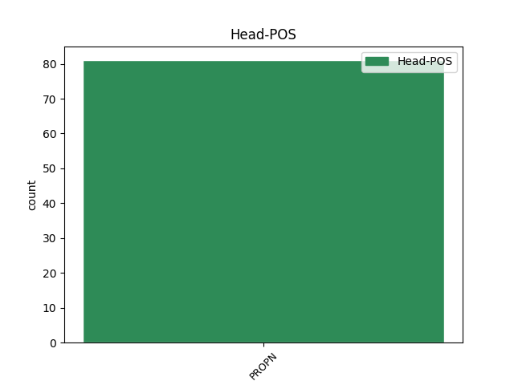
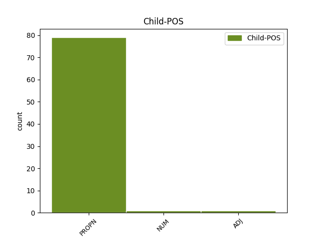

Distribution of features within this leaf



Agreement Rules sorted by frequency.
- When the dependent token is the flat multiword expression(flat@name) of the head token, and the head token is PROPN and the dependent token is PROPN.
1 eee _ _ _ _ 0 _ _ _
2 hrvaški _ _ _ _ 0 _ _ _
3 predsednik _ _ _ _ 0 _ _ _
4 stipe Stipe PROPN Npmsn Case=Nom|Gender=Masc|Number=Sing 0 _ _ _
5 mesič Mesič PROPN Npmsn Case=Nom|Gender=Masc|Number=Sing 4 flat@name _ msd=Slmei|word=Mesič
6 je _ _ _ _ 0 _ _ _
7 rekel _ _ _ _ 0 _ _ _
8 da _ _ _ _ 0 _ _ _
9 so _ _ _ _ 0 _ _ _
10 med _ _ _ _ 0 _ _ _
11 drugo _ _ _ _ 0 _ _ _
12 svetovno _ _ _ _ 0 _ _ _
13 vojno _ _ _ _ 0 _ _ _
14 istro _ _ _ _ 0 _ _ _
15 vse _ _ _ _ 0 _ _ _
16 do _ _ _ _ 0 _ _ _
17 trsta _ _ _ _ 0 _ _ _
18 osvojili _ _ _ _ 0 _ _ _
19 hrvaški _ _ _ _ 0 _ _ _
20 partizani _ _ _ _ 0 _ _ _
21 in _ _ _ _ 0 _ _ _
22 da _ _ _ _ 0 _ _ _
23 bi _ _ _ _ 0 _ _ _
24 morala _ _ _ _ 0 _ _ _
25 biti _ _ _ _ 0 _ _ _
26 slovenija _ _ _ _ 0 _ _ _
27 hvaležna _ _ _ _ 0 _ _ _
28 saj _ _ _ _ 0 _ _ _
29 bi _ _ _ _ 0 _ _ _
30 sicer _ _ _ _ 0 _ _ _
31 gledala _ _ _ _ 0 _ _ _
32 na _ _ _ _ 0 _ _ _
33 morje _ _ _ _ 0 _ _ _
34 z _ _ _ _ 0 _ _ _
35 oddaljenosti _ _ _ _ 0 _ _ _
36 dvajsetih _ _ _ _ 0 _ _ _
37 kilometrov _ _ _ _ 0 _ _ _
1 tu _ _ _ _ 0 _ _ _
2 david David PROPN Npmsn Case=Nom|Gender=Masc|Number=Sing 0 _ _ _
3 healy _ _ _ _ 0 _ _ _
4 in _ _ _ _ 0 _ _ _
5 nigel Nigel PROPN Npmsn Case=Nom|Gender=Masc|Number=Sing 2 conj _ msd=Slmei|word=Najdžl
6 worthington _ _ _ _ 0 _ _ _
7 menedžer _ _ _ _ 0 _ _ _
8 oziroma _ _ _ _ 0 _ _ _
9 selektor _ _ _ _ 0 _ _ _
10 reprezentance _ _ _ _ 0 _ _ _
1 eee _ _ _ _ 0 _ _ _
2 andrej Andrej PROPN Npmsn Case=Nom|Gender=Masc|Number=Sing 0 _ _ _
3 blatnik _ _ _ _ 0 _ _ _
4 maja _ _ _ _ 0 _ _ _
5 novak _ _ _ _ 0 _ _ _
6 berta _ _ _ _ 0 _ _ _
7 bojetu _ _ _ _ 0 _ _ _
8 alojz _ _ _ _ 0 _ _ _
9 ihan _ _ _ _ 0 _ _ _
10 aleš _ _ _ _ 0 _ _ _
11 debeljak _ _ _ _ 0 _ _ _
12 franjo _ _ _ _ 0 _ _ _
13 frančič _ _ _ _ 0 _ _ _
14 [gap] _ _ _ _ 0 _ _ _
15 igor _ _ _ _ 0 _ _ _
16 zabel _ _ _ _ 0 _ _ _
17 igor Igor PROPN Npmsn Case=Nom|Gender=Masc|Number=Sing 2 parataxis _ msd=Slmei|word=Igor
18 bratož _ _ _ _ 0 _ _ _
1 jezus Jezus PROPN Npmsn Case=Nom|Gender=Masc|Number=Sing 0 _ _ _
2 marija Marija PROPN Npfsn Case=Nom|Gender=Fem|Number=Sing 1 unk@fixed _ msd=Slzei|word=jozusmarija[split_2-2]
3 … _ _ _ _ 0 _ _ _
4 ja _ _ _ _ 0 _ _ _
5 saj _ _ _ _ 0 _ _ _
6 tako _ _ _ _ 0 _ _ _
7 je _ _ _ _ 0 _ _ _
8 če _ _ _ _ 0 _ _ _
9 se _ _ _ _ 0 _ _ _
10 ti _ _ _ _ 0 _ _ _
11 prikaže _ _ _ _ 0 _ _ _
12 grčija _ _ _ _ 0 _ _ _
1 videli _ _ _ _ 0 _ _ _
2 smo _ _ _ _ 0 _ _ _
3 štiri _ _ _ _ 0 _ _ _
4 smučarke _ _ _ _ 0 _ _ _
5 peta _ _ _ _ 0 _ _ _
6 je _ _ _ _ 0 _ _ _
7 marion Marion PROPN Npfsn Case=Nom|Gender=Fem|Number=Sing 0 _ _ _
8 bertrand _ _ _ _ 0 _ _ _
9 zadnja zadnji ADJ Agpfsn Case=Nom|Degree=Pos|Gender=Fem|Number=Sing 7 appos _ msd=Ppnzei|word=zadnja
10 pred _ _ _ _ 0 _ _ _
11 matejo _ _ _ _ 0 _ _ _
12 robnik _ _ _ _ 0 _ _ _
1 tom Tom PROPN Npmsn Case=Nom|Gender=Masc|Number=Sing 0 _ _ _
2 jones _ _ _ _ 0 _ _ _
3 quincy _ _ _ _ 0 _ _ _
4 jones _ _ _ _ 0 _ _ _
5 tom _ _ _ _ 0 _ _ _
6 petty _ _ _ _ 0 _ _ _
7 šest šest NUM Mlc-pn Case=Nom|Number=Plur|NumForm=Word|NumType=Card 1 parataxis _ msd=Kbg-mi|word=šest
8 šest _ _ _ _ 0 _ _ _
9 osem _ _ _ _ 0 _ _ _
10 nič _ _ _ _ 0 _ _ _
11 osem _ _ _ _ 0 _ _ _
12 nič _ _ _ _ 0 _ _ _
13 nič _ _ _ _ 0 _ _ _
14 pokličite _ _ _ _ 0 _ _ _
15 zdaj _ _ _ _ 0 _ _ _
1 aaa _ _ _ _ 0 _ _ _
2 spreminja _ _ _ _ 0 _ _ _
3 pa _ _ _ _ 0 _ _ _
4 se _ _ _ _ 0 _ _ _
5 vsebina _ _ _ _ 0 _ _ _
6 operacije _ _ _ _ 0 _ _ _
7 nato Nato PROPN Npmsn Case=Nom|Gender=Masc|Number=Sing 0 _ _ _
8 training _ _ _ _ 0 _ _ _
9 mission _ _ _ _ 0 _ _ _
10 in _ _ _ _ 0 _ _ _
11 irak Irak PROPN Npmsn Case=Nom|Gender=Masc|Number=Sing 7 flat@foreign _ msd=Slmei|word=Irak
1 ja _ _ _ _ 0 _ _ _
2 … _ _ _ _ 0 _ _ _
3 jaz _ _ _ _ 0 _ _ _
4 sem _ _ _ _ 0 _ _ _
5 pa _ _ _ _ 0 _ _ _
6 tu _ _ _ _ 0 _ _ _
7 v _ _ _ _ 0 _ _ _
8 vznožju _ _ _ _ 0 _ _ _
9 pohorja Pohorje PROPN Npnsg Case=Gen|Gender=Neut|Number=Sing 0 _ _ _
10 zelenega _ _ _ _ 0 _ _ _
11 pohorja Pohorje PROPN Npnsg Case=Gen|Gender=Neut|Number=Sing 9 appos _ msd=Slser|word=Poharja
12 [gap] _ _ _ _ 0 _ _ _
No disagree examples found.